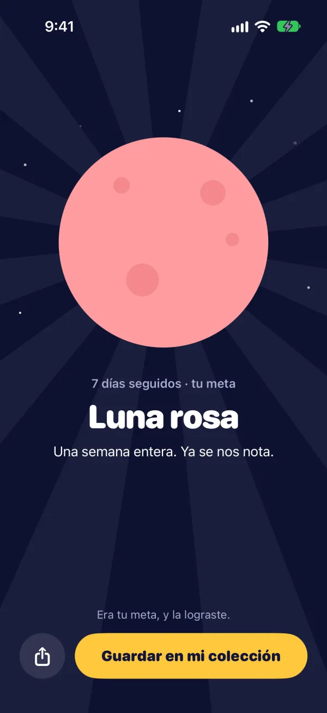
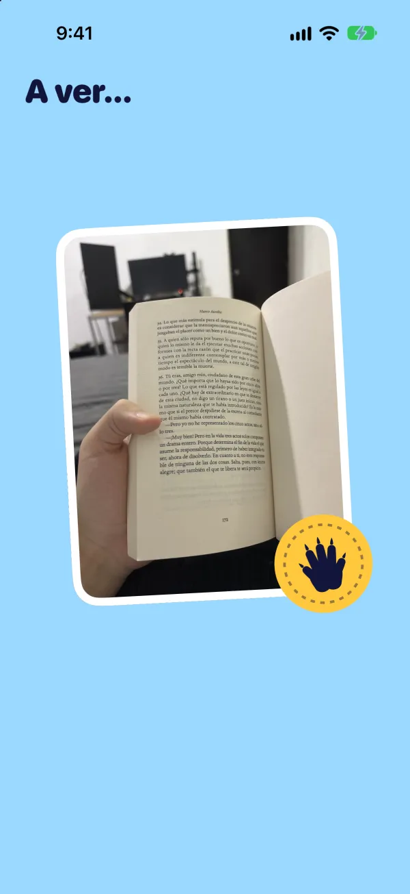
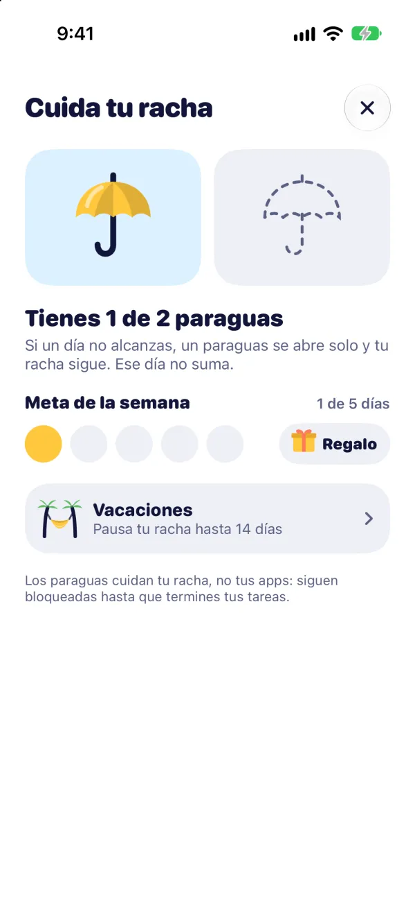
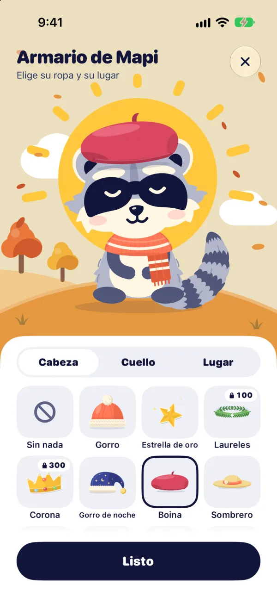

Lunas que se ganan
Al llegar a tus metas de días seguidos, ganas lunas para tu colección.

Hábitos con fotos para iPhone
Mapi es un mapache que te acompaña a cumplir tus tareas del día. Cumples cada una con una foto y, mientras falten, un escudo cubre las apps que tú elijas.
Gratis · iPhone con iOS 26 o posterior · En español
Así funciona
Leer, hacer ejercicio, estudiar inglés… Tú decides qué cumplir cada día.

Cumples cada tarea con una foto del momento, y Mapi la sella con su patita.
Con la última tarea se llena la luna del día y tus apps se abren solas.
El escudo
Mientras falte una tarea, Mapi cubre con un escudo las apps que tú elijas, con Tiempo en pantalla de Apple. Cuando cumples la última, se abren solas.
Enfoque
Elige cuántos minutos y pon el iPhone boca abajo o bloquéalo: la luna se llena mientras te enfocas. Si te vas a otra app, la cuenta se pausa hasta que vuelvas.
Tu racha
Cada día que cumples suma a tu racha. Si un día no alcanzas, un paraguas se abre solo y tu racha sigue.

Lo que ganas cumpliendo
Al llegar a tus metas de días seguidos, ganas lunas para tu colección.

Gorros, collares, ropa y lugares. Algunas piezas solo se ganan cumpliendo días: la Estrella de oro a los 10, la Corona a los 300.

Privacidad
Abres Mapi y empiezas. No te pedimos correo ni contraseña.
Nada se mete entre tú y tus tareas.
No medimos lo que haces en la app.
Tus tareas y fotos se guardan en tu iPhone, con respaldo en tu iCloud privado.
Mapi Plus
El escudo, las fotos y el enfoque son gratis. Mapi Plus agrega widgets, tu progreso por mes y año, y más.
Prueba el plan anual 7 días gratis. El precio sale en tu moneda dentro de la app.
| Función | Gratis | Plus |
|---|---|---|
| Tu progreso | Semana | Mes y año |
| Resumen de la semana | Básico | Completo |
| Widgets | — | ✓ |
| Recordatorios | 2 al día | A tu medida |
| Horarios de enfoque | — | ✓ |
| Mapi revisa tus fotos | — | ✓ |
| Consejos para tus tareas | — | ✓ |
| Tareas | Hasta 3 | Sin límite |
| Archivar tareas | — | ✓ |
| Paraguas para tu racha | Hasta 2 | Hasta 4 |
| Armario de Mapi | 4 piezas | 57 piezas |
Preguntas
En iPhone con iOS 26 o posterior.
Sí. Por ahora Mapi está solo en español.
No. Abres la app y empiezas.
Con Tiempo en pantalla de Apple. Tú eliges las apps y le das permiso a Mapi. Puedes quitar el permiso cuando quieras desde Ajustes.
Si tienes un paraguas, se abre solo y tu racha sigue. En Tu progreso ese día cuenta como no cumplido, para que veas cómo vas de verdad.
En la página de soporte encuentras más respuestas y nuestro correo.
Mapi llega muy pronto al App Store. Síguelo en TikTok para saber cuándo.